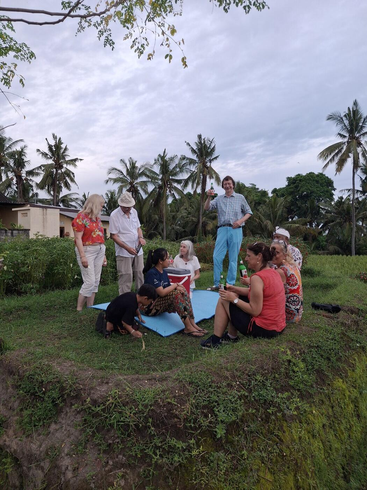

Happy Local Family Adventure

Discover what it truly means to live like a local Balinese through this unique and immersive village adventure. Your day begins at a traditional Balinese family compound, where your local host introduces you to the rhythm of daily village life.
From there you'll set off on foot toward the riverside, passing through lush rice fields and vibrant tropical greenery. The river is fed by a chain of eleven natural springs, and along the way you'll visit two of them, alongside the Subak irrigation system that keeps Bali's rice terraces thriving.
The highlight of the day is the Jungle Cooking experience: using fresh ingredients gathered from the forest and river — local vegetables, herbs, and freshly caught fish or shrimp — you'll cook together with your hosts over a traditional wood-fired stove, then enjoy your homemade Balinese lunch beside the river.
Questions or stories from past guests